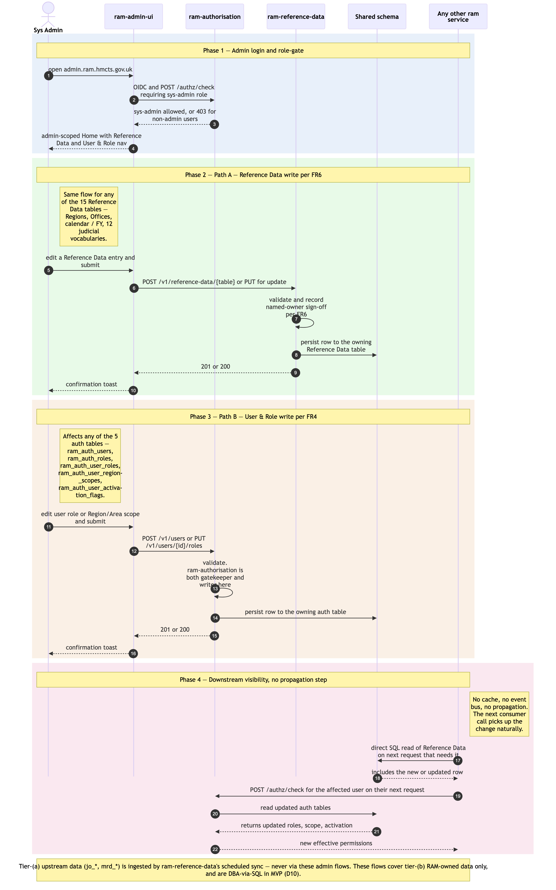

Admin maintenance flows in ram-admin-ui
Sequence diagram of the two admin write paths exposed by ram-admin-ui at MVP. Both paths share the same actor (System Administrator), the same auth pattern, and the same UI shell — only the destination service and the downstream effect differ. Both run in ram-admin-ui, never in ram-ui, per the v2.10 architecture decision separating admin from business workflows at the repo boundary.
- Path A — Reference Data maintenance (FR6) — Sys Admin (or RSU-with-admin-rights — same admin module, same role-gate) creates / updates an entry in any of the 15 Reference Data tables (Regions, Offices, calendar / financial-year boundaries, the 12 judicial vocabularies). Writes go via the
ram-reference-dataversioned API. Other services pick up the change on their next direct-SQL read of the affected table (per revised FR7) — no cache invalidation needed because there is no cache (architecture Principle 2). - Path B — User & Role admin (FR4) — Sys Admin updates a user's role and Region/Area scope assignment, or creates a new user record. Writes go via the
ram-authorisationversioned API. The change is reflected on the affected user's next request via the standard per-requestauthz/check(see./user-authentication-and-authorisation.mdPhase 3) — no propagation step is needed because authz is resolved per request.
Four phases: (1) admin login + role-gate; (2) Reference Data write path; (3) User & Role write path; (4) downstream visibility (no propagation step).
Not in this diagram
- Upstream reference-data ingestion (replaces the retracted Phase 0 ETL — revised D3, 2026-06-10) — the JOH eLinks nightly sync and MRD weekly blob pick-up populate the tier-(a)
jo_*/mrd_*tables in-process insideram-reference-data; never via admin UI or admin API. See./joh-onboarding-and-sitting-generation.mdPhase 1. The admin maintenance flows here apply to tier-(b) RAM-owned data only (FR6). - Per-(jurisdiction, region) phased activation cutover (FR57) — wave-cutover operation that flips
ram_auth_user_activation_flagsby jurisdiction + region. Operator-initiated per wave, DBA-via-SQL per the rollout runbook in MVP1. - Named-owner sign-off workflow detail — Reference Data writes are subject to named-owner sign-off per FR6; the diagram captures the validation point but not the full multi-step approval. Sign-off mechanics are programme-level.
- Post-MVP admin modules — per-(jurisdiction, region) activation dashboard and user-action audit viewer. Module placeholders are reserved in
ram-admin-ui, which is itself post-MVP2 — in MVP every flow on this page is performed by DBAs via direct SQL per operational runbooks.
Cross-cutting steps omitted for clarity
- Authentication + per-request authorisation — Sys Admin's JWT is validated by both
ram-reference-data's andram-authorisation'sJWTFilter. Admin role gating is enforced byram-authorisationitself (role =sys-admin); for User & Role admin, this meansram-authorisationis both the gatekeeper and the writer of the change. See./user-authentication-and-authorisation.mdPhase 3. - All UI → service calls flow through Azure API Management.
ram-admin-uideploys to its own hostname (e.g.admin.ram.hmcts.gov.uk) but the same APIM tier handles its requests.

Source: ./admin-maintenance-flows.mmd (Mermaid). Regenerate with mmdc -i admin-maintenance-flows.mmd -o admin-maintenance-flows.png -w 2400 -s 2 --backgroundColor white.
Phase summary
| Phase | Driver | Architectural rule | Outcome |
|---|---|---|---|
| 1 — Admin login + role-gate | Sys Admin | OIDC SSO same as business users; ram-authorisation role-gate restricts ram-admin-ui access to sys-admin role |
Admin lands on ram-admin-ui Home with admin-scoped navigation; non-admin users see a 403 if they try to reach this hostname |
| 2 — Reference Data write path (FR6) | Sys Admin | ram-reference-data is the single writer for the 15 Reference Data tables (revised FR7); writes are validated, audited, and persisted to the shared schema |
Reference Data row created / updated; visible to every other RAM Pathfinder service on its next direct-SQL read (no cache, no propagation step) |
| 3 — User & Role write path (FR4) | Sys Admin | ram-authorisation owns the 5 auth tables (ram_auth_users, ram_auth_roles, ram_auth_user_roles, ram_auth_user_region_scopes, ram_auth_user_activation_flags); writes are validated and persisted |
User / role / scope row created / updated; affected user sees the new effective permissions on their next request via per-request authz/check |
| 4 — Downstream visibility | (none — passive) | No cache, no event bus, no propagation step (architecture Principle 2 + REST-first synchronous coordination) | Next consumer call picks up the change naturally |
Where to find more detail
| Detail | Location |
|---|---|
ram-admin-ui repo purpose, MVP modules, and future-surface placeholders |
../repository-strategy.md — new row added in v2.10 |
ram-admin-ui directory structure |
../repo-structure.md → Complete Project Directory Structure — UI repos → ram-admin-ui |
ram-reference-data repo purpose and key functions |
../repository-strategy.md Phase 0 row |
ram-authorisation repo purpose and key functions |
../repository-strategy.md Phase 0 row |
| 15 Reference Data tables + 5 Authorisation tables (column-level detail) | ../data-tables.md |
| FR4 (User & Role admin) + FR6 (Reference Data maintenance) | PRD FR4, FR6; both annotated in ./functional-requirements-coverage.md with the admin UI location |
| Why admin and business UI are separate repos (v2.10) | ../../architecture.md → Step 4 Frontend Architecture; ./changelog.md v2.10 |
| Per-request authz resolution that picks up Path B changes on the next call | ./user-authentication-and-authorisation.md Phase 3 |
| Upstream reference-data ingestion (replaces the retracted ETL) | ../../architecture.md → Upstream reference-data ingestion; ../data-tables.md tier-(a) tables |
| As-is equivalent — Module 11 Admin had only narrow self-service (password change, new-user request); higher-impact admin was off-screen in OPT Support. RAM Pathfinder brings it into a first-class admin module. | ../../../docs/architecture/asis/functional-modules.md → Module 11 |
Source: _bmad-output/planning-artifacts/architecture/sequence-diagrams/admin-maintenance-flows.md